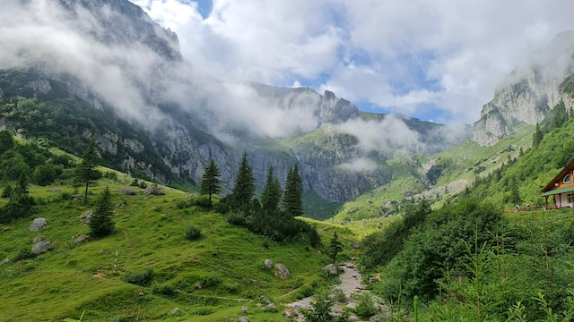

Wanderreisen
Die besten Orte für Wanderreisen in Rumänien
Karpaten, Donaudelta und Făgăraș-Gebirge
Das Land Rumänien liegt im Osten Europas und ist weitgehend vom Massentourismus verschont geblieben. Daher haben sich die Natur und die rumänische Kultur ihre Ursprünglichkeit bewahrt. Ein echter Geheimtipp für Ihren Urlaub in Rumänien ist das Wandern! Neben bezaubernden Landschaften ist Rumänien insbesondere für seine Gebirge bekannt. Im Osten des Landes, nahe an der ukrainischen Grenze, öffnet sich das Flussbett der Donau zu einer enorm breiten Mündung in das Schwarze Meer. Das auch als Donaudelta bezeichnete Gebiet verzaubert Wanderer mit unberührten Auwäldern, einer artenreichen Tierwelt und einer ästhetischen Seenlandschaft.
Durch Bukarests Altstadt schlendern
Nirgendwo ist der bunte Architekturmix von Bukarest so präsent wie hier: Renovierte Gebäude neben halben Ruinen, alte Prachtbauten und enge Gässchen, historische Kirchen und ein paar moderne Gebäude stapeln sich bunt neben- und übereinander. Mitten in der Altstadt liegt die mit Restaurants und Cafés vollgestopfte Lipscani-Straße. Hier ist eigentlich immer etwas los, ob mittags, abends oder nachts.
Entdecke das Schloss Peles in den transsilvanischen Karpaten
Wenn man einmal genug von Bukarests Betonwüsten hat, ist ein Ausflug zum 130km entferntem Schloss Peles genau das Richtige. Mitten in den transsilvanischen Karpaten steht die Sommerresidenz des ersten Rumänischen Königs. Von Außen erinnert der Bau aus der Neorenaissance an ein Fachwerkhaus, innen gibt es prachtvolle dunkle Holzvertäfelungen und Einrichtungsgegenstände zu bewundern. In Sonnenschein leuchtet das Anwesen und die Landschaft drum herum vor allem im Herbst in den wunderschönsten Farben, bei schlechtem Wetter und Nebel wird die Stimmung schaurig schön.
Auf den Spuren von Dracula im Schloss Bran

Um Transsilvanien ranken sich viele Mythen, die vor allem auf den Erzählungen des Autors Bram Stoker basieren. Siebenbürgen, wie das zentralrumänische Gebiet auf Deutsch heißt, sei Heimat der Vampire im Allgemeinen und des berüchtigten Dracula im Besonderen. Eine zentrale Rolle spielt dabei das Schloss Bran, in der Nähe der Stadt Brasov. Das Schloss ähnelt dem Draculaschloss in Bram Stokers berühmten Roman, der Fürst Vlad III. Drăculea, der das historische Vorbild der Romanfigur Dracula ist, hat das Schloss aber wahrscheinlich nie betreten. Bei einer Tour durch das Schloss, dessen Grundmauern um 1377 entstanden, erfährt man dennoch viel über die Grausamkeiten des berüchtigten Fürsten und den Lebensumständen der Menschen vor ein paar Hundert Jahren. In der Burg kann es übrigens ziemlich voll werden, also besichtigt ihr diese am besten sehr früh oder außerhalb der Saison.
Glücklich sterben auf dem Merry Cemetery

Der Merry Cemetery, der an der Grenze Rumäniens zur Ukraine liegt, ist der wohl außergewöhnlichste Friedhof der Welt. Man kriegt hier, ja wirklich, gute Laune, denn der Friedhof wurde über Jahrzehnte von dem Künstler Stan Ioan Pătraș gestaltet, der die traditionellen hölzernen Grabstelen nicht nur blau, sondern auch mit Bildern der Verstorbenen (welchem Beruf sie nachkamen und unter welchen Umständen sie starben) und Versen zu ihrem Leben verzierte.
Bestaune die Große Synagoge von Constanța

Noch bis 1996 war die Große Synagoge von Constanța Heimat einer kleinen jüdischen Gemeinde in der ostrumänischen Stadt. Seit mehr als 20 Jahren ist sie aber als letzte Synagoge von Constanța dem Verfall preisgegeben, wodurch sich ein bizarr-schöner Anblick ergibt. Nur drei der vier tragenden Wände sind intakt, das Dach ist bereits kollabiert, viele der Fenster eingeschmissen. Im Inneren des Gebäudes wachsen bereits Bäume und das Mauerwerk ist überzogen von Moos. Vom Betreten des Gebäudes wird abgeraten, da es jederzeit kollabieren könnte.